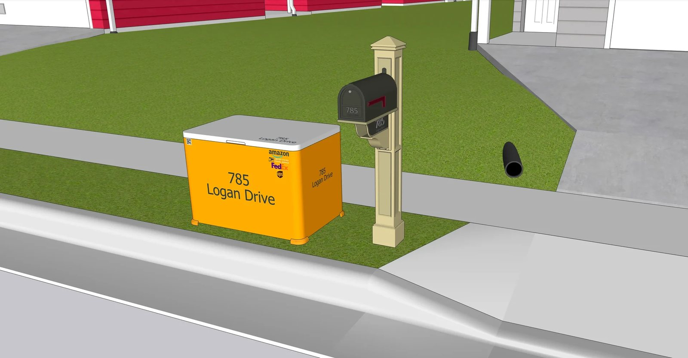

Продажи на маркетплейсах: с чего начать и как не уйти в минус

Выбор площадки под свой товар
В России основные каналы — Wildberries, Ozon, Яндекс Маркет и Мегамаркет. Wildberries даёт максимальный трафик, но и конкуренция там самая жёсткая. Ozon удобнее для технически сложных товаров и крупногабарита, у него прозрачнее аналитика. Яндекс Маркет и Мегамаркет стоит рассматривать как дополнительный канал, а не основной. Начинать на одной площадке проще: меньше расходов на контент и логистику, понятнее юнит-экономика.
Юнит-экономика до закупки
Главная ошибка новичков — считать прибыль как «цена минус закупка». Считать нужно полную себестоимость: закупка, логистика до склада, комиссия площадки, эквайринг, хранение, платная приёмка, продвижение и процент возвратов. Если маржа после всех вычетов меньше 15–20%, товар рискованный: любое изменение тарифов или всплеск рекламных ставок уводит в минус. Считайте на калькуляторах площадок и перепроверяйте вручную.
Поставщик и первая партия
Ищите поставщика через оптовые рынки, профильные выставки и фабричные каталоги, а не только на агрегаторах. Берите пробную партию, чтобы проверить качество, упаковку и сроки. Договоритесь о допоставках: ходовой товар закончится быстрее, чем вы ожидаете, а карточка без остатка теряет позиции. Проверьте сертификацию — для части категорий (детские товары, косметика, электроника) она обязательна.
Карточка товара как инструмент продаж
Покупатель принимает решение по фото и первым строкам описания. Нужны качественные снимки с нескольких ракурсов, инфографика с ключевыми характеристиками и текст, закрывающий частые вопросы. Заголовок и описание собирайте под поисковые запросы площадки, а не под рекламные слоганы. Отзывы и рейтинг влияют на выдачу сильнее, чем кажется: первые 10–20 отзывов стоит получить любой ценой — через выкуп или работу с первыми клиентами.
Продвижение и реклама
Внутренняя реклама (поиск, автопродвижение, акции) даёт быстрый старт, но съедает маржу. Начинайте с минимальных ставок и следите за ДРР — долей рекламных расходов в выручке. Если ДРР выше 20–25%, проверяйте карточку и цену, а не увеличивайте бюджет. Внешний трафик (соцсети, блогеры, Telegram-каналы) помогает выделиться и снизить зависимость от аукциона площадки.
Логистика, возвраты и работа с отзывами
Схема FBO (склад площадки) удобнее, но дороже по хранению и требует точного прогноза спроса. FBS (свой склад) даёт контроль, но требует своей упаковки и оперативной отгрузки. Заранее продумайте, кто обрабатывает возвраты и брак. На негативные отзывы отвечайте по существу и быстро: публичный ответ видят следующие покупатели.
Вывод
Маркетплейсы в РФ — рабочий канал, но не «пассивный доход». Устойчивый результат даёт связка: точная юнит-экономика, надёжный поставщик, сильная карточка и дисциплина в рекламе. Начинайте с одной площадки и одной узкой ниши, тестируйте на малых партиях и масштабируйте только то, что уже приносит прибыль.
Ссылки на маркетплейсы и сервисы ведут на проверенные предложения, для вас цена не меняется.
Найти на Маркете →